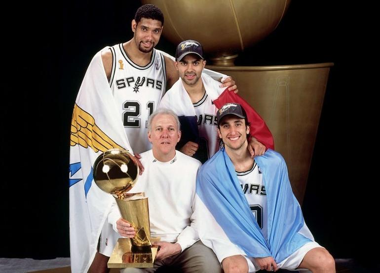

基本信息 2003年-2016年：GDP时期 2004-05赛季，马刺队从西雅图得到了后卫布伦特·巴里，从纽约得到了中锋纳兹尔·穆罕穆德并签下老将格伦·罗宾逊，以59胜23负的战绩结束常规赛，在西南分区排名第一，西部排名第二。季后赛中，马刺以4比1轻取丹佛掘金队，4比2击败西雅图超音速队，4比1淘汰菲尼克斯太阳队。总决赛对阵拉里·布朗率领的底特律活塞队，马刺先声夺人，场均赢18分保住两个主场，移师底特律后活塞还以颜色，场均赢24分将大比分扳成2比2。天王山之战两队使出浑身解数，进入加时赛还是难分伯仲，最后时刻罗伯特·霍里2+1帮助马刺96:95险胜。活塞拿下第6战后双方进入抢七，马刺最终以81:74加冕。7场总决赛邓肯场均20.6分14.1个篮板2.1次盖帽，再次收下FMVP奖杯。 2006-07赛季，马刺开局14场比赛中赢了11场。12月2日战胜国王队后，马刺超越凯尔特人，以59.5%的胜率成为了NBA历史上常规赛胜率第二高的球队。在常规赛末段的31场比赛中，马刺成为了联盟里胜率最高的球队（25胜6负），最终以联盟第一的防守和58胜24负的常规赛战绩进入季后赛。首轮比赛马刺4比1淘汰丹佛掘金队。次轮邓肯以场均30.2分12.5个篮板3.1记盖帽带领马刺4-2淘汰菲尼克斯太阳队。西部决赛马刺4-1轻取犹他爵士。随后在总决赛中以4比0横扫勒布朗·詹姆斯率领的克利夫兰骑士队，再夺总冠军，成为NBA历史上继凯尔特人、湖人、公牛队后，第四支夺得4次及以上总冠军的NBA球队。托尼·帕克以场均24.5分5个篮板3.3次助攻当选总决赛MVP，成为NBA历史上首个外籍FMVP。休赛期马刺股东买下了NBA发展联盟的奥斯汀公牛队（后改名奥斯汀马刺队），成为第二支拥有发展联盟球队的NBA球队。 2013-14赛季，马刺开季前14战取得13胜，11月上中旬也顺利打出一波11连胜，创造了队史最佳开局。全明星周末后，马刺连胜19场，3月份的单月战绩为全胜，最终以62胜20负的常规赛排名联盟第一。常规赛马刺没有一名球员的场均上场时间达到30分钟，是ABA和NBA合并以来首支能做到这一点的球队。波波维奇第三度获得年度最佳教练殊荣。季后赛首轮马刺4比3淘汰小牛队。西部半决赛4比1淘汰开拓者队。西部决赛4比2淘汰雷霆队，再度与卫冕冠军热火队会师总决赛。最终马刺4比1夺冠，捧起了第五座总冠军奖杯。五场比赛中马刺总计以528-458净胜热火70分，刷新NBA总决赛历史系列赛最大分差。22岁零351天的三年级球员科怀·伦纳德获得总决赛MVP，成为NBA历史上第一位90后的FMVP，也是有史以来第三年轻的获奖者（第一、二名都是魔术师）。休赛期马刺续约波波维奇、邓肯和帕克，并用第30顺位选秀权选择了来自UCLA的凯尔·安德森。 |